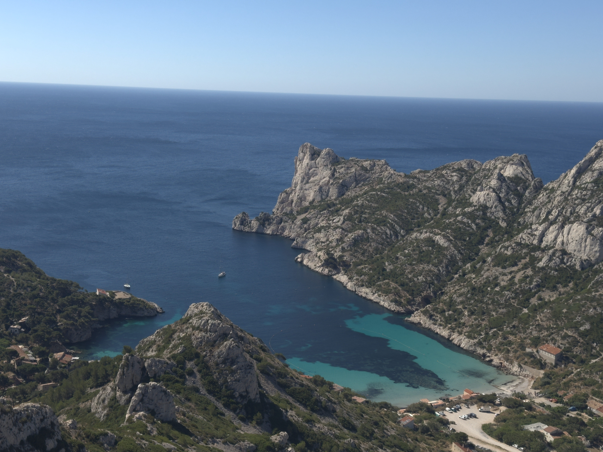
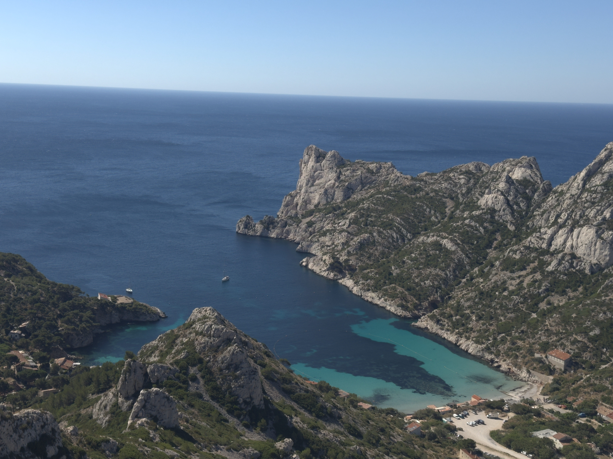

🌍The Nature lovers
 

🌍 How to enjoy the nature
Nature offers a wonderful escape from the busyness of everyday life, and there are many ways to connect with it. Here are some ideas to get you started: Immerse yourself in nature: Go for a hike or walk: This is a classic way to enjoy the outdoors. Find a local trail or park and take in the scenery, sounds, and smells of nature. Have a picnic: Pack a lunch and find a scenic spot to relax and enjoy your meal. This is a great way to spend time with family and friends. Go stargazing: Find a dark spot away from light pollution and marvel at the beauty of the night sky. You can use a stargazing app or book to help you identify constellations. Go for a swim: Take a dip in a lake, river, or ocean. Swimming is a great way to cool off on a hot day and enjoy the feeling of being in the water. Engage your senses: Practice mindfulness: Pay attention to the sights, sounds, smells, and sensations of nature. Focus on your breath and be present in the moment. Go barefoot: Take off your shoes and feel the grass, sand, or dirt beneath your feet. This can be a very grounding experience. Listen to the sounds of nature: Close your eyes and listen to the birds singing, the wind rustling through the leaves, or the waves crashing on the shore.